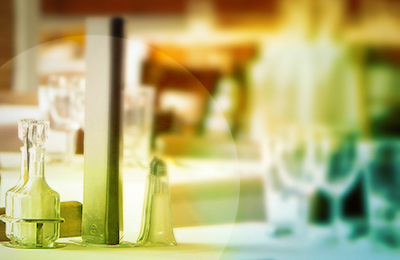

關於本餐廳
廣受饕客們喜愛的PengiunTree，在內湖區成立第三間分店！延續整系列輕鬆愉快的美式用餐環境， 「企鵝樹家族」更將招牌色系''鵝蛋黃''置入店內，並增加花草植物的加持與古董裝飾的襯托， 加上一樓設計的落地門窗與庭院空間的視覺呈現，無論是清晨亦或是午後，當陽光煦煦灑入， 這兒就是品味美食享受人生的舒活國度。
天花板以淡黃色作為主色調，搭配實木座椅的擺設，夏日的午後，陽光恣意輕灑， 陽光折射的自然採光，點亮一樓的每個角落。一本書、一杯咖啡、一份輕食餐點， 有如在綠地上享受漫活的步調。輕靠在木質桌椅旁，更猶如童話故事中，於樹下野餐的樂活享受。
「企鵝樹家族」以歐風樂活的角度置入於美式餐點之中，帶給饕客們一個不一樣的輕食養身主義。 店長John於開業前，在歐洲考察一個月之久，在那發現了許多不同的歐系美食， 將道地口味完整保留輸入台灣，要給喜愛嘗鮮的饕客們，獨特的味蕾體驗。
「企鵝樹家族」不同於其它美式餐點，追求少油少鹽少油脂、無油炸的輕食養身主義， 帶領饕客尋找健康的美食泉源。店內提供多樣化的沙拉組合，份量加倍、能量加分， 讓女性及跟髮族顧客，能享用低脂高纖且有飽足感的夏日餐點。
為了讓輕食餐點能更加多元化，麵包類特別提供裸麥、黑麥麵包的健康選擇， 且新增3～4款三明治餐點與店內獨家的法式捲餅、法式吐司。保留食材最原始的美味， 並開發企鵝樹家族本身的獨家餐點，給老顧客們與喜愛這份森林系草本質地的朋友， 更多樣的選擇。
推開「企鵝樹家族」大門，猶如打開神秘的寶盒。而潛藏在「企鵝樹家族」寶盒內的秘密， 就是這偌大的場地。空間寬敞，無論是家族聚餐、朋友聚會、公司尾牙、慶功宴、同學會、 生日party…等，都很適合來此共聚一堂，享受親朋好友相聚的美好時光。每年到了6～9月的送 舊迎新季，正是校園活動盛行之時，隨著學長姊們的畢業，對於良師的感謝，以及歡送新生的到 來，各式各樣的謝師宴、送舊晚會、迎新晚會與社團活動都可以來到「企鵝樹家族」舉辦。 而「企鵝樹家族」利用鋼琴打造出藝術氣息空間，就算是來場小型的音樂發表會也沒問題。 另外，還有「吃到飽專案」～請點選最新公告，即有吃到飽專案的詳細介紹。